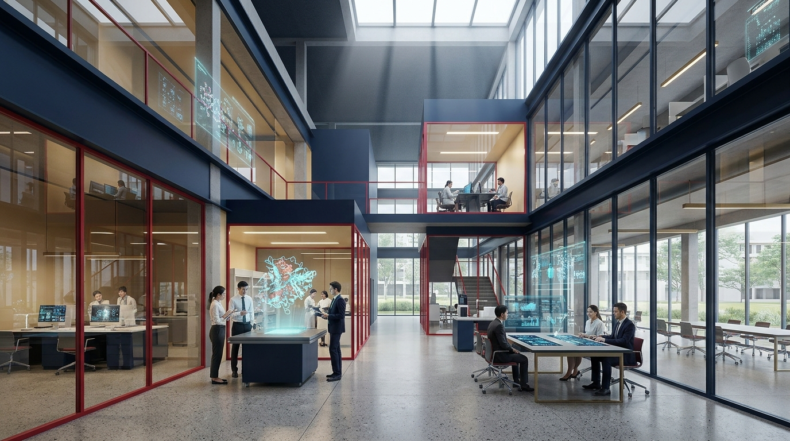

THAMMASAT 90 YEARS
DRIVING INNOVATION AT SPEED
วันที่ 27 มิถุนายน พ.ศ. 2477 ท่ามกลางการสร้างประชาธิปไตยในสยาม ศาสตราจารย์ ดร.ปรีดี พนมยงค์ สถาปนามหาวิทยาลัยวิชาธรรมศาสตร์และการเมือง (มธก.) เพื่อเปิดกว้างโอกาสทางการศึกษาให้ราษฎรทุกคนอย่างเท่าเทียม โดยมีผู้สมัครรุ่นแรกถึง 7,094 คน จนเติบโตสู่วาระ 90 ปีที่มีนักศึกษาปัจจุบันกว่า 42,850 คน
ศ.ดร.ปรีดี พนมยงค์ สถาปนา มธก. ในฐานะ "ตลาดวิชา" มีผู้สมัครเข้าเรียนรุ่นแรกสูงถึง 7,094 คน เพื่อเป็นบ่อน้ำบำบัดความกระหายของราษฎร
จากเนื้อที่จำกัดเพียง 104 ไร่ ริมแม่น้ำเจ้าพระยา ณ ท่าพระจันทร์ ธรรมศาสตร์ได้ขยายรากฐานสู่ศูนย์รังสิต (1,757 ไร่) Hub การแพทย์ นวัตกรรม และวิทยาศาสตร์, ศูนย์ลำปาง (364 ไร่) สถาบันชั้นนำภาคเหนือ และศูนย์พัทยา (566 ไร่) ศูนย์วิจัยยานยนต์ไฟฟ้าในพื้นที่ EEC
โครงสร้างการศึกษาของ มธ. ครอบคลุม 26 คณะและวิทยาลัย แบ่งเป็น 4 คลัสเตอร์ยุทธศาสตร์ พร้อมแผนภูมิ Interactive สำรวจคะแนนตัดต่ำสุด (Cutoff Score) และอัตราการแข่งขันในรอบ TCAS Admission
คลิกแท่งกราฟเพื่อดูสถิติเจาะลึกและเส้นทางอาชีพของแต่ละคณะ
ธรรมศาสตร์มุ่งเน้นความเสมอภาคและดุลยภาพประชากรในทุกมิติวิชาการ โดยมีสัดส่วนนักศึกษาหญิงรวม 62.4% (26,620 คน) และนักศึกษาชาย 37.6% (16,030 คน) พร้อมความหลากหลายที่เปิดกว้างในทุกเพศภาวะ
วิวัฒนาการการย้ายศูนย์การศึกษาจากท่าพระจันทร์สู่รังสิต ถือเป็นก้าวกระโดดทางโครงสร้างที่ใหญ่ที่สุดของธรรมศาสตร์ จากท่าพระจันทร์ 100% สู่การเป็นศูนย์กลางวิชาการขนาดใหญ่ที่รังสิต (73.5%) และเครือข่ายภูมิภาค
เปรียบเทียบสัดส่วน 4 ศูนย์การศึกษาตั้งแต่ พ.ศ. 2500 ถึง พ.ศ. 2567
ธรรมศาสตร์ก้าวสู่มหาวิทยาลัยในกำกับของรัฐที่มีเสถียรภาพทางการเงินสูง ด้วยการกระจายแหล่งรายได้ที่สมดุล ไม่พึ่งพางบประมาณแผ่นดินเพียงอย่างเดียว
เปรียบเทียบงบประมาณรายรับ 5 ปีต่อเนื่อง (2563–2567) เติบโตจาก 13,420 ล้านบาท สู่ 15,350 ล้านบาท ด้วยการบริหารจัดการที่เป็นอิสระ เสริมสร้างความเข้มแข็งของ 5 แหล่งรายได้หลัก
คุณภาพทางวิชาการและชื่อเสียงในสายตานายจ้าง (Employer Reputation) ส่งผลให้ มธ. ไต่อันดับ QS Asia สู่ Top 70 (อันดับ 68) และคณะพาณิชย์ฯ (TBS) คว้าการรับรอง Triple Crown ติด 1% ของโลก
TBS มหาวิทยาลัยธรรมศาสตร์ ครองการรับรองครบ 3 สถาบันหลักระดับโลก (Triple Crown) แห่งแรกในประเทศไทย (2018) ร่วมกับสถาบันชั้นนำระดับโลก
| สถาบันการศึกษา | สถานะมงกุฎ | AACSB | EQUIS | AMBA | การจัดอันดับโลก |
|---|---|---|---|---|---|
| ธรรมศาสตร์ (TBS) | 👑 Triple Crown (แห่งแรกในไทย 2018) | ได้รับ (2012) | ได้รับ (2012) | ได้รับ (2018) | Top 1% ของโลก (Eduniversal 5 Palms) |
| จุฬาลงกรณ์ (CBS) | 👑 Triple Crown (100%) | ได้รับ (2020) | ได้รับ (2019) | ได้รับ (2023) | Top Tier Business School (Triple Crown 2023) |
| ศศินทร์ (Sasin) | Dual Crown (66%) | ได้รับ | ได้รับ | - | Global Executive Education |
| มหิดล (CMMU) | Single Crown (33%) | ได้รับ | - | - | Management Innovation |
| นิด้า (NIDA Business School) | Single Crown (33%) | ได้รับ | - | - | Graduate Leadership |
ธรรมศาสตร์ได้รับการจัดอันดับโดย THE Impact Rankings ให้เป็น Top 10 ของโลกใน SDG 11 (เมืองยั่งยืน) ด้วยคะแนน 98.4/100 ตอกย้ำความมุ่งมั่นสู่ความเป็นเลิศด้านสิ่งแวดล้อมและ Net-Zero Campus 2030
คำขวัญ "ธรรมศาสตร์เพื่อประชาชน" เด่นชัดผ่านโรงพยาบาลธรรมศาสตร์เฉลิมพระเกียรติ ซึ่งเติบโตจากสถานพยาบาล 120 เตียง สู่โรงพยาบาลระดับตติยภูมิขั้นสูงขนาด 1,400 เตียง และเป็นเสาหลักด้านสาธารณสุขของประเทศในทุกวิกฤต
บริการสวนหัวใจ ผ่าตัดบายพาส และดูแลรักษาโรคหลอดเลือดหัวใจตลอด 24 ชั่วโมง โดยทีมแพทย์ผู้เชี่ยวชาญเฉพาะทาง
เทคโนโลยีฉายรังสีความแม่นยำสูง เคมีบำบัด และการรักษามะเร็งแบบแม่นยำจำเพาะบุคคล (Precision Oncology)
ระบบการแพทย์ฉุกเฉินรับส่งผู้ป่วยวิกฤตทางบกและทางอากาศ เชื่อมต่อเครือข่ายบริการสุขภาพทั่วประเทศ
การดูแลสุขภาพองค์รวม การส่งเสริมสุขภาพ และการดูแลผู้สูงอายุอย่างอบอุ่นตามวิถีชุมชน
นับถอยหลังสู่ศตวรรษที่ 1 ในปี พ.ศ. 2577 ธรรมศาสตร์ขับเคลื่อนยุทธศาสตร์ TU 2034 มุ่งสู่ Net-Zero Campus 2030 และโครงการ 88 SANDBOX ปั้นผู้ประกอบการสตาร์ทอัพเพื่อสังคมสู่เป้าหมาย 10,000 ทีม

ยุทธศาสตร์มุ่งสู่ Top 100 QS World University Ranking สร้างองค์ความรู้และนวัตกรรมเปลี่ยนโลกเพื่อประโยชน์ของมนุษยชาติ เชื่อมโยงเครือข่ายวิจัยระดับสากลกว่า 350 สถาบัน
ปรับคันเร่งยุทธศาสตร์ 4 ด้านเพื่อจำลองดัชนีความพร้อมสู่ 100 ปี ธรรมศาสตร์ (Centennial Readiness Index)
ธรรมศาสตร์ 90 ปี สู่ศตวรรษแห่งการสร้างผู้นำ ขับเคลื่อนนวัตกรรม และยืนหยัดเคียงข้างประชาชน
การเดินทางจากตลาดวิชาเพื่อราษฎร สู่สถาบันอุดมศึกษาชั้นนำระดับสากลที่ยืนหยัดเพื่อสังคม เสรีภาพ และความเป็นธรรม
รายละเอียดของหลักสูตรและพันธกิจ
ชุดข้อมูล CSV และเทมเพลตมาตรฐานสากล ออกแบบตามหลัก Edward Tufte & LATCH Framework